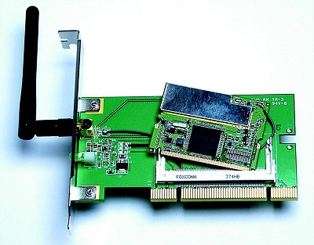
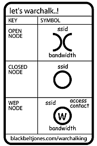

|
Grundlagen ComputernetzeProf. Jürgen Plate |
|
Grundlagen ComputernetzeProf. Jürgen Plate |
ISDN steht für "Integrated Services Digital Network" = diensteintegrierendes Netz (Siehe auch Näheres im Modem-Skript). Der ISDN-Basisanschluß bietet zwei Kanäle mit einer Bandbreite 64 kBit/s pro Kanal. Aufgrund der digitalen Übertragungsweise steht diese durchgehend zur Verfügung. Neben den beiden Basiskanälen steht noch der Signalisierungskanal (D-Kanal) mit 16 kBit/s zur Verfügung. Dieser wird nur für die Signalisierung genutzt, während die beiden B-Kanäle der eingentlichen Datenübertragung dienen. Neben dem Standardanschluß mit 64 kBit/s wird noch der ISDN-Primärmultiplexanschluß (PMxA) PMxA angeboten, der eine Bandbreite von 2 MBit/s bietet. Der PMxA hat 30 B-Kanäle mit einer Datenrate von jeweils 64 kBit/s. Dazu kommt noch ein D-Kanal, der hier im Unterschied zum ISDN-Ba auch eine Datenrate von 64 kBit/s hat, sowie ein weiterer Kanal für Rahmenbildung und Rahmenerkennung mit einer Rate von ebenfalls 64 kBit/s.
Die Bandbreite für Modems ist selbst bei gutem Signal/Rausch-Abstand auf analogen Telefonleitungen ausgereitzt. Jedoch stellen die geringen Übertragungsraten kein Problem der Kupferadern des Telefonanschlusses bis zur Vermittlungsstelle dar. Das Problem liegt im Zusammenspiel aller beteiligten Komponenten des Netzes: Der Weg vom Anschluß zur Vermittlungsstelle, die Übertragungstechnik der Vermittlungsstellen untereinander und der Weg zu dem Anschluß der angewählt wurde. Ende der 80er Jahre hat man SDSL (Single Line Digital Subscriber Line) und HDSL (High Data Rate Digital Subscriber Line) entwickelt. So war es nun endlich möglich kostengünstige 2-MBit-Systeme anzubieten. HDSL hat einige Vorteile gegenüber SDSL: Drei- bis vierfache Leitungslänge ohne Regeneratoren durch Verwendugn eines andern Leitungsprotokolls und einer leistungsstarken Echokompensation. Außerdem verursacht HDSL relativ geringe Störungen der benachbarten Adern, diese können bei SDSL wegen der starken Einstrahlung kaum für andere Anwendungen (Telefonie) verwendet werden. ADSL (Asymetric Digital Subscriber Line) und VDSL (Very High Data Rate Digital Subscriber Line) wurden ebenfalls Anfang der 90er Jahre entwickelt, hierdurch wird noch mehr Bandbreite zur Verfügung gestellt. Mehr dazu im Modem-Skript.
Eine virtuelle Verbindung kann dauerhaft eingerichtete werden oder erst bei Bedarf aufgebaut und nachher abgebaut werden. Im Falle der dauerhaften Verbindung spricht man von einer "Permanent Virtual Circuit", abgekürzt PVC, anderenfalls von einer "Switched Virtual Circuit" (SVC). Die SVCs werden beispielsweise dann eingesetzt, wenn die Verbindung nur selten punktuell genutzt wird. Eine dauerhafte Verbindung würde in einem solchen Falle nur unnötige Kosten verursachen. Ein Beispiel hierfür ist z.B. die Anbindung von Telearbeitsplätzen an das Rechnernetz des Betriebes.
Das Frame-Relay-Verfahren ermöglicht zwar einen schnellen Datenaustausch in paktetvermittelten Datennetzen, doch die Übertragung von Sprache und anderen echtzeitkritischen Datenströmen kann hiermit nicht erfolgen. Bei der Übertragung eines Datenpaktes ist die Leitung für die Zeit der Übertragung blockiert; eine begonnene Übertragung eines Paketes kann nicht mehr unterbrochen werden. Aufgrund der variablen Größe der Datenpaktete bei Frame Relay kann die Übertragung daher eine längere Zeit inanspruch nehmen. Ein Weg dieses Problem zu lösen wäre es, die Datenpaketgröße drastisch zu reduzieren, wie es z.B. beim ATM-Verfahren festgelegt wurde.
Während das Datex-Netz bis zur Schicht 3 hinauf definiert ist, umfaßt der Standard von Frame-Relay nur noch die Schichten 1 und 2. Die Eigenschaften in Stichpunkten:
Im Kontrollfeld (Header) werden auch keine expliziten Quell- und Zieladressen
angegeben, sondern ein virtueller Pfad und ein virtueller Kanal.
Ein virtueller Pfad (virtual path, VP) ist eine für kurze Zeit geschaltete
Verbindung, die während ihrer Existenz so aussieht wie eine richtige
Festverbindung (Standleitung).
Dieser geschaltete Weg durch das Netz wird als virtuell bezeichnet, weil
er nicht permanent fest geschaltet ist, sondern nur für die kurze Zeit der
Datenübertragung.
Zur Kennzeichnung wird ihr ein VPI (virtual path identifier)
als Bezeichnung zugeordnet. Ein virtueller Kanal (virtual channel, VC) ist
ein Übertragungskanal, der genau wie der virtuelle Pfad nur während der
Datenübertragung existiert. Zur Kennzeichnung wird ihm ein VCI
(virtual channel identifier) als Bezeichnung zugeordnet.
Ein virtueller Pfad besteht aus mehreren virtuellen Kanälen, komplexe Anwendungen
können mehrere virtuelle Kanäle gleichzeitig belegen. Die klassischen
Standleitungen enthalten ebenfalls mehrere Übertragungskanäle, doch können
die virtuellen Kanäle bei ATM die virtuellen Pfade (Leitungen) wechseln.
Wenn beispielsweise zwei virtuelle Kanäle auf Pfad 1 ankommen, kann Kanal
1 durchaus auf Pfad 2 und Kanal 2 auf Pfad 1 zum selben Zielnetz geschaltet
werden.
Bei der Wegewahl wird eine einfache Art des Routings verwendet, um die Datenpakete durch das Netz zu senden. Der Weg, den das Datenpaket durch das ATM-Netz zurücklegt, besteht dabei aus drei Hauptabschnitten:
ATM kann Datenströme unterschiedlicher Bitraten flexibel übertragen und vermitteln. Die Übertragungsrate ist skalierbar, d. h. Übertragungsbandbreite wird flexibel bereitgestellt. Jedem Endgerät kann statisch (also vorab) oder dynamisch (also bei konkretem Bedarf) Bandbreite zugewiesen werden, die Netzleistung wächst also mit. Durch die transparente Übertragung in den Zellen werden bei den Netzübergängen keine Gateways benötigt, um von LAN- auf WAN-Protokolle umzusetzen. ATM ist gleichermaßen für LANs, schnelle Backbones und WANs geeignet.
ATM ist verbindungsorientiert und baut immer eine Punkt-zu-Punkt-Verbindung auf. Für eine Übertragung muß also immer eine Verbindung zwischen zwei Stationen geschaltet werden (ATM basiert auf der Vermittlungstechnik). Klassische LANS sind verbindungslos, jede Station ist zu jeder Zeit mit allen anderen Stationen fest verbunden, alle teilen sich dasselbe Übertragungsmedium. ATM als LAN (lokales ATM, L-ATM) benötigt eine LAN-Emulation. So entsteht ein virtuelles Netz, bei dem das ATM-Netz mehreren Teilnehmern (Geräte/Software) ein nichtexistierendes LAN vorspiegeln muß. Dabei sind verschiedene Ansätze allerdings noch in Diskussion. Diese LAN-Emulationen arbeiten alle auf Schicht 2 des ISO-Schichtenmodells, dadurch eignen sie sich für routebare und nicht routebare Protokolle gleichermaßen. Für die Übertragung von IP-Paketen über ATM haben sich die nachfolgend beschriebenen 3 Verfahren heute etabliert.
| Telefonnetz | Paketnetz (Datex, X.25) | Frame-Relay | ATM | |
| Vermittlungsprinzip | Leitungsvermittlung | Paketvermittlung | schnelle Paketvermittlung | Zellvermittlung |
| Fehlerkorrektur im Netz | nein | ja | nein | nein |
| Paketgröße | keine Pakete | variabel | variabel | fest (53 Byte) |
| mehrere Verbindungen gleichzeitig | nein | ja | ja | ja |
| Durchsatz der Netzknoten | sehr hoch | mittel | hoch | sehr hoch |
Angemietet wurden die Lichtwellenleiter von den Providern meist "dunkel" (Dark Fiber), also unbeschaltet. Wenn ein IP-Carrier neue Punkt-zu-Punkt-Strecken benötigt, kann er bei den Dark-Fiber-Versorgern Faser(n) anmieten. Der Dark-Fiber-Anbieter verlegt Kabel verschiedener Hersteller. In einem LEAF-Kabel (Large Effective Area Fiber) beispielsweise stehen 144 Fasern zur Verfügung. Mit welcher Kapazität der Carrier die Fasern beschaltet, liegt in seinem Ermessen. Die technische Ausstattung dafür richtet er selbst ein.
Um eine flächendeckende Versorgung mit seinem Backbone-Netz zu gewährleisten, muss ein IP-Carrier zumindest in mehreren Großstädten vertreten sein. Dazu betreibt er dann "Points of Presence" (PoPs), die über Punkt-zu-Punkt-Glasfasertrassen verbunden sind. Von dort aus führen sie außerdem IP-Leitungen zu ihren Kunden. Außerdem arbeiten die IP-Carrier oft auch als Internet Service Provider. In den PoPs finden überdies noch Router von kleineren lokalen Carriern Platz, die mit dem großen Nachbarn IP-Daten austauschen. Die PoPs dienen innerhalb des Carrier_netzes als Datendrehscheibe. Um mehr Bandbreite aus einer Faser herhauszuholen, hat sich das "Dense Wavelength Division Multiplexing" (DWDM) durchgesetzt. Dabei werden mehrere Signale multiplex in den Lichtwellenleiter eingespeist. Pro Wellenlänge und Faser lassen sich heutzutage Bitraten von 1 GBit/s bis 40 GBit/s erreichen. Auf dem Weg durch den Lichtwellenleiter wird das Signal gedäpft. Etwa alle hundert Kilometer müssen Repeaterstationen stehen, die mit optischen Faserverstärkern ausgestattet sind. Je nach Bedarf wird bei dieser Gelegenheit auch noch eine Abzweigung eingerichtet, um regionale Kunden zu versorgen.
In nahezu jedem modernen Weitverkehrsnetz kommt als Transporttechnik in Europa die "Synchrone Digitale Hierarchie" (SDH) und in den USA der fast deckungsgleiche "Standard Synchronous Optical Network" (SONET) zum Einsatz. Mit einem Zeitmultiplexverfahren werden Nutzdaten in Transport-Container ("Synchrone Transport-Module", STM) verpackt und mit einem Header versehen. Jedes Paket hat je nach Streckenbandbreite eine bestimmte "Byte-Breite", dauert aber stets 125 Nanosekunden.
SDH gestattet den Verkauf von Kapazitäten je nach Bandbreite. Im Angebot stehen beispielsweise STM-1 (155 MBit/s), STM-4 (622 MBit/s), STM-16 (2,5 GBit/s) und STM-64 (10 GBit/s). In den USA bietet der SONET-Standard die gleichen Geschwindigkeitsstufen unter anderen Bezeichnungen: Eine STM-4-Leitung entspricht in SONET einer OC-12-Verbindung ("OC = Optical Carrier"), STM-16 entspricht OC-48, usw. Diese Klassifizierung ist für die Provider wichtig. Inoffiziell teilen sich die Unternehmen in "Tier"-Klassen ein (englisch "tier" = Stufe, Rang). "Tier 1" bedeutet über weite Strecken mindestens STM-16, ein autonomes System mit nationaler oder globaler Ausdehnung und rege Beziehungen zu anderen Carriern. "Tier-2"-Anbieter sind deutlich kleiner, und "Tier-3"-Provider verfügen über ein lokal beschränktes Glasfasernetz.
Der Betrieb von Austauschknoten oder Transitpunkten benötigt Hardware und Wartung. Daher haben sich weltweit einige große öffentliche Knoten etabliert. Europas größter Knoten ist der "London Internet Exchange"(LINX). An den Knoten können die Provider ihre Daten kostenneutral von einem Netz ins andere leiten ("Commercial Internet Exchange", CIX). Sie sorgen dabei selbst für die Zuführung zum CIX und die Kosten. National existieren kleinere Knoten, in Deutschland beispielsweise der INXS in München, der BCIX in Berlin und der HHCIX in Hamburg sowie der internationam bedeutende DeCIX in Frankfurt (betrieben vom Provider-Verband eco). 141 Carrier und Provider sind dort derzeit angebunden.
Statistiken über die Datenmenge, die durch den DeCIX rauscht erhalten Sie unter http://www.decix.com/info/traffic.html.
Weiterführende Informationen zu diesem Thema:
Roland Kiefer, Peter Winterling: Optische Netze, Technik, Trends und Perspektiven, c't 2/03, S. 152
Holger Bleich, Jürgen Kuri, Petra Vogt: Zwischen Boom und Baustopp, Schweinezyklus beim
Ausbau der Internet-Backbones, c't 21/03, S. 184
Irene Heinen: Daten-Disponenten, Neue Internet-Knoten verkürzen Wegstrecken auf dem
Daten-Highway, c't 25/03, S. 92
Holger Bleich: Bosse der Fasern, Die Infrastruktur des Internet, c't 07/05, S. 88
Bekanntester, aber wenig populärer Ableger ist die Internet-Telefonie. Zwar läßt sich damit billig mit Gesprächspartnern in der ganzen Welt telefonieren, dies müssen lediglich ebenfalls über ein Internet-Telefon oder die entsprechende Software verfügen. Aber da der Datenstrom im Internet unberechenbar ist und es keine Zustellgarantie für Datenpakete gibt, leidet die Sprachqualität. Im eigenen Firmennetz hingegen lassen sich Netzlast, Traffic, Laufzeiten und Verbindungswege kontrollieren. Das ändert zwar nichts daran, daß IP an sich ausschließlich zur Datenübertragung entwickelt wurde. Das IP-Protokoll ist aber wesentlich flexibler, als es ihm viele zutrauen.
Firmen können Ihren gesamten internen Telefonverkehr über ihr Intranet kostenlos abwickeln. Privatanwendern und Firmen erschließen sich Kostenersparnisse bei Telefonaten ins Ausland oder zum Mobilfunknetz. Voice over IP stellt die erste Stufe der Konvergenz von Daten und Sprache dar. Die Sprachintegration auf der flexibleren EDV-Infrastruktur auf der Basis von IP bietet sich an. Die Schritte zur integrierten Telefonie bzw. der vollständigen Vereinigung der Kommunikationsplattformen sind:
Bei geringeren Kosten bietet die integrierte Telefonie bessere Leistung und ist bereits sehr stark auf die kommenden Geschäftsanwendungen ausgerichtet. Die Vorteile sind u. a.:
Zu einem kompletten Voice-over-IP-System gehört zunächst einmal eine TK-Anlage auf Softwarebasis. Als Kommunikationszentrale verwaltet sie die Berechtigungen und Profile der Nutzer. Sie stellt Verbindungen her und sorgt für die richtige Zuordnung, ohne daß die eigentliche Kommunikation über sie läuft. Der IP-Gateway ist der Mittler zwischen IP-Telefonie und der bisher genutzten Telefontechnologie wie etwa ISDN. Am Ende der Leitung im VoIP-Netz steht entweder ein IP-Telefon oder ein Computer mit Sound-Karte und IP-Telefonie-Software. Für die Sprachein- und -ausgabe wird ein Headset verwendet. Herkömmliche Telefone lassen sich aber mit einer Adapterkarte ebenso computertauglich anschließen.
Bei Datenpaketen kommt es nicht so sehr darauf an, in welcher Reihenfolge und
mit welcher Verzögerung sie übertragen werden. Der Empfänger
speichert die eingehenden Pakete und setzt sie wieder in der richtigen Reihenfolge
zusammen. Wird ein Paket beschädigt oder geht verloren, wird es erneut
gesendet.
Das funktioniert nicht bei zeitsynchronen Daten wie Sprache oder Video. Deshalb
wurden im neuen IP-Standard, IPv6, zwei neue Sub-Standards implementiert:
das Reservation Protocol (RSVP) und das Realtime Transport Protocol (RTP).
RSVP erlaubt zwei Endpunkten einer Verbindung, bestimmte Parameter auszuhandeln,
darunter eine maximale Verzögerung (Delay) und einen minimalen Durchsatz.
Das IP-Netz garantiert mittels verschiedener Verfahren, daß diese als
"Flowspec" bezeichneten Quality of Service (QoS) eingehalten werden.
Am sichersten funktioniert das unter Verwendung des "Guaranteed-Service"-Verfahrens. Hierbei wird anderer Traffic im Netz unterbunden, sobald dieser die Flowspec gefährden könnte. Diesem starren, aber effizienten Verfahren steht "Controlled Load" gegenüber. Hierbei dürfen auch andere Stationen IP-Pakete solange senden, wie eine mittels Flowspec ausgehandelte Verbindung keine Beeinträchtigung in den vorgegebenen Parametern feststellt. "Controlled Load" bietet also mehr Dynamik und lastet das IP-Netz insgesamt besser aus. Ein Vorurteil ist, daß für Voice over IP Anwendungen bestimmte IP-Pakete mit Sprachdaten mittels RSVP priorisiert werden. Das stimmt nicht. RSVP dient nur zum Aushandeln und Überwachen der Verbindungsparameter. IP-Sprachpakete werden zwar in den meisten IP-Netzen von Routern und Switches vorrangig behandelt, allerdings ist diese Priorisierung meist herstellerabhängig und somit proprietär. Das birgt Probleme, wenn Netzkomponenten unterschiedlicher Hersteller im IP-LAN Voice-Daten transportieren soll.
Dem soll RTP entgegenwirken. Jedes IP-Paket erhält seit IP 6 zusätzlich einen
Zeitstempel (Time Stamp) mit der Entstehungszeit sowie eine Folgenummer (Sequence
Information). Dies erlaubt es dem Empfänger, Pakete nicht nur in richtiger
Reihenfolge, sondern auch zeitsynchron zusammenzusetzen. Das Real Time Control Protocol
(RTCP) koordiniert zudem Sender- und Empfängerprotokolle und sorgt für
Monitoring und Management von Echtzeitverbindungen.
Außerdem definiert RTP die Kodierung von Audiosignalen nach G.711 sowie
G.723. Hierbei handelt es sich um Codecs (Coding/Decoding), die von der ITU zur
analogen und digitalen Verschlüsselung von Sprache in Telefonnetzen
definiert wurden. G.711 entspricht in etwa dem ISDN-Standard, Sprachdaten werden
mit einem Datenstrom von 64 kbit pro Sekunde übertragen.
Für Voice over IP kommt G.711 jedoch nicht zum Einsatz, da sich die Datenlast durch
zusätzliche Komprimierung und bessere Abtastverfahren auf bis zu 9,6 kbps drücken
läßt (dies entspricht dem GSM-Standard). Verbreitet ist vor allem das
CELP-Verfahren (Codebook Excited Linear Predictive Coding), das mit einem komplizierten
mathematischen Modell der menschlichen Sprache arbeitet. Als Ergebnis entsteht ein
Datenstrom von 16 kbit pro Sekunde, der Telefonate in ISDN-Sprachqualität
überträgt.
Kombiniert mit Dualrate Speech Coding, definiert im G.723-Standard, genügt sogar
ein Datenstrom von nur 5,3 kbps. Außer der geringeren Netzlast bringt dies den
Vorteil, daß sich mehr Pakete puffern lassen, ohne die Echtzeitbedingung zu
gefährden. Die Qualität der Sprachübertragung im IP-Netz gewinnt
also, je kleiner die Datenrate für einen Sprachkanal ist.
Ein weiterer wichtiger Standard für Voice over IP kommt vom Videoconferencing. H.323 umfaßt sowohl eine Codec-Technologie (wie G.723) wie auch die Signalisierung und Verbindungssteuerung für Videokonferenzsysteme. Für IP-Telefonie wurden Teile des H.323-Standards übernommen. Über eine TCP-Verbindung wird zwischen Sender und Empfänger das Signalisierungsprotokoll H.245 ausgehandelt. Dies zeigt eingehende Rufe an und übermittelt Statusinformationen. Die Datenübertragung selbst erfolgt über UDP. TCP-Pakete werden dadurch bei jedem Hop auf Fehler kontrolliert und gegebenenfalls korrigiert beziehungsweise zurückgewiesen. UDP läßt diese Kontrolle aus, UDP-Pakete erreichen den Empfänger also schneller. Dafür muß der sich selbst um Fehlerkorrektur bemühen. Voice over IP kodiert hierzu entweder im selben Paket oder im Folgepaket Redundanz, aus der sich ein beschädigtes Paket beim Empfänger reparieren läßt, womit ein erneutes Senden defekter IP-Pakete vermieden wird. Zusätzlich erfolgt die Verbindungssteuerung einer Sprachübertragung im IP-Netz gemäß H.323 mit einem Q.931-konformen Signalisierungskanal. Dieser steuert die Sprachverbindung und ist für Funktionen wie etwa Makeln oder Rufnummernübermittlung zuständig.
Um Voice over IP im LAN einzuführen, müssen sämtliche Switches und Router die entsprechenden Protokolle von IPv6 auf dem ISO/OSI-Level 3 unterstützen. Wichtig sind vor allem die Verarbeitung von RTP sowie die Unterstützung von RSVP. Für Konferenzen und Videodaten (die mittels der selben Verfahren wie Sprache übertragen werden), wird außerdem das relativ neue IP-Multicast genutzt. Dabei kopiert eine Netzkomponente einen eingehenden Datenstrom eigenständig und sendet ihn an alle Empfänger weiter. Dies vermeidet zusätzliche Datenkanäle zwischen dem Ursprung der Übertragung und jedem Empfänger. Statt dessen wird der Datenfluß an beliebiger Stelle im Netz dupliziert.
Mittlerweile gibt es erste Ethernet-Telefone. Diese werden statt an eine Telefondose an eine RJ-45-Buchse eines Ethernet-Hubs angeschlossen. Alternative hierzu bieten sich CTI oder Wandlerkarten an. Auch etliche DSL-Router ermöglichen den Anschluß von herkömmlichen Analogtelefonen oder dienen sogar als Telefonanlage. Aber auch die Telefonie direkt am PC mit einem Headset und passender Software ist möglich (sogenanntes Softphone).
VoIP läuft so zuverlässig wie die Internetverbindung selbst. Generell besteht damit kein Unterschied zur Festnetzanschluss. Auch können Gespräche in die Fest- und Mobilfunknetz geführt und entgegengenommen werden. Dazu erhalten Nutzer beim VoIP-Provider kostenlos ihre Ortsrufnummer, der auch die Notrufe 110 und 112 bereitstellt.
Bei Voice-over-IP (VoIP) bestehen Sicherheitsmängel, die sich aus der Internetnutzung ergeben. Telefonate von VoIP-Nutzern lassen sich innerhalb lokaler Netze mit Hilfe von Software-Tools (Paket Sniffern) abhören und Rufnummern ausspionieren. VoIP-Adapter und -Telefone sind empfindlich gegenüber Hacker-Attacken, insbesindere Denial-of-Service-Angriffen. Generell sollte auch die Konfigurationsoberfläche der VoIP-Hardware durch ein Passwort geschützt werden. Eindringlinge könnten sonst bestehende Guthaben abtelefonieren und eingehende Anrufe entgegennehmen.
Im Gegensatz zur SPAM-Problematik bei E-Mail ist unerwünschte Werbung über VoIP, sogenannter SPIT, derzeit noch kein Problem. Gegenüber E-Mail ist der VoIP-Bereich nicht offen zugänglich, sondern abgeschottet. Realisiert wird dies durch die genaue Zuordnung der VoIP-Rufnummern. Jeder Nutzer ist damit dem VoIP-Provider bekannt. Anrufe, die außerhalb dieser vertrauenswürdigen Netze initiiert werden, sind nicht kostenlos und deshalb uninteressant für SPITTER. Ein Problem stellt die Signalisierung zwischen den einzelnen Telefonanbietern dar, die gewissermaßen "auf Vertrauensbasis" abläft. Überwindet ein Hacker die Signalisierungsprotokolle, kann er so ziemlich alles machen was er will.
Mit einer maximalen Datenübertragungsrate von 14 Mbit/s und synchronem Up- und Download ist Home-Plug auch recht flott. In der Praxis lassen sich - je nach Leitungsqualität - Bandbreiten zwischen 5 Mbit/s und 7 Mbit/s gewährleisten, was z. B.für die Verlängerung des DSL-Anschlusses in jedes Zimmer eines Hauses völlig ausreicht. Je nach Dämpfungsfaktor der Elektroinstallation lassen sich mit MicrolinkDLAN (Direct-LAN) Entfernungen bis 200 m überbrücken und beliebig viele Computer anschließen. Zusätzliche Geräte sind nicht notwendig, da die Phasenkopplung durch ein "Übersprechen" stattfindet. Die Installation der DLAN-Komponenten gestaltet sich einfach: Über den DLAN-Adapter verbindet man eine Netzkomponente an die nächstgelegene Steckdose, und sofort lässt sich jede andere beliebige Stromsteckdose im Haus als Netzwerkzugang verwenden. Ein Ethernet- oder ein USB-Kabel - je nach Modell - koppelt den PC an einen weiteren Micro-Link-DLAN-Adapter, dessen Stecker die Verbindung zum Heimnetz herstellt. Auf Grund automatischen Frequenzwechsels unterdrückt das System Einflüsse in der Datenübertragung durch aktive und Störungen ins Stromnetz sendende Haushaltsgeräte wie Waschmaschinen oder Kühlschränke. Im Unterschied zu drahtlosen Funknetzen wirkt bei HomePlug der Stromzähler im Haus als Sperre gegen unerwünschten Zugriff von außen (Signal wird stark gedäpft). Zusätzliche Sicherheit bietet eine leistungsfähige DES-Verschlüsselung (Datenverschlüsselung in Übertragungssystemen).
Die Geräte sind kompatibel zum Home-Plug-Standard 1.0. Im vergangenen Jahr verabschiedete
die Home-Plug-Powerline-Alliance diesen Standard, zu deren weltweit über 100 Mitgliedern
unter anderem Compaq, Intel, Motorola, AMD, Cisco Systems, 3Com, Panasonic und Texas Instruments
gehören. Die von der DLAN-Technik verwendeten Frequenzen liegen im Bereich von 4 MHz
bis 21 MHz, somit werden die Rundfunkbänder nicht gestört (520 kHz bis 1605 kHz =
Mittelwelle; 150 kHz bis 285 kHz = Langwelle; 87,20 MHz bis 108,00 MHz = UKW). Die Technik
basiert auf dem Home-Plug-Standard, in dem die Sendepegel speziell in einigen Amateurfunkbändern
abgesenkt sind. "Abgesenkt" heiß aber, daß das Signal ist in der Nähe
durchaus noch feststellbar ist, teilweise sogar in störender Stärke. Übrigens betrifft
die Absenkung nur die klassischen KW-Amateurfunk-Bänder 40m, 20m und 15m. Die seit einigen
Jahren im Bereich 4 bis 21 MHz zusätzlich erlaubten Blöcke (30m und 17m) sehen keine
Absenkung. Wenn sich DRM (www.drm.org) weiter ausbreitet, dürften sich auch die neuen
Kurzwellendigitalrundfunkhörer über PLC ärgern - ebenso die Minderheit der
Fernempfangsfreaks.
Obwohl Home-Plug von der Leistungsfähigkeit herkömmlicher Ethernet-Verbindungen noch
ein gutes Stück entfernt ist, stellt es für viele Gebiete eine interessante Alternative
dar. Auch gegenüber Wireless-LAN bietet diese Technologie einige Vorteile. In der Praxis
hängt die erreichbare Übertragungsgeschwindigkeit allerdings vom Zustand der
Elektroinstallation im Haus und der Ausstattung der Steckdosen ab. Hier ist dann
das Know-how des Elektroinstallateurs gefragt.
Die ersten "Radio LANs" arbeiteten überwiegend mit dem gegenüber Störungen relativ unempfindlichen Spread-Spectrum-Verfahren, bei dem die Daten auf viele Trägerfrequenzen verteilt werden, typisch auf einen Bereich von 20 MHz bei einer Datenrate von 2 MBit/s. Das Spreizen des Signals erfolgte entweder mit dem Zufallssystem Direct Sequence Spread Spectrum (DSSS) oder durch das zyklische Springen zwischen mehreren Frequenzbändern (FHSS, Frequency Hopping Spread Spectrum). Sicherheitshalber werden die Daten verschlüsselt.
Technisch entsprechen diese Netze einem Bus-System ohne Kabel oder die Schnurlos-Stationen bilden zusammen eine Bridge. Seit 1997 werden Funk-LANs mit 1 oder 2 MBit/s im 2,4-GHz-Bereich mit der Norm IEEE 802.11 standardisiert. Als Sendeleistung ist maximal 1 Watt vorgesehen. Die Reichweite innerhalb von Gebäuden beträgt etwa 50 m, außerhalb davon einige hundert Meter. Neuere Entwicklungen erreichen bei 19 GHz bis zu 10 MBit/s, allerdings bei deutlich kleinerer Reichweite.
Mit IEEE 802.11 (Teil der Standardisierungsbemühungen des IEEE-802-Komitees, zuständig für lokale Netzwerktechnologien) ist 1997 ein erster Standard für Funk-LAN-Produkte geschaffen worden. Mitte 1997 wurde der erste IEEE-802.11-Standard (2 Mbit/s Funk-LAN-Technologie) veröffentlicht, welcher dann, im Oktober 1999, mit IEEE 802.11b (High Rate) um einen Standard für 11-Mbit/s-Technologie erweitert wurde. Der IEEE-802.11-Standard beschreibt die Übertragungsprotokolle bzw. Verfahren für zwei unterschiedliche Arten, Funk-Netzwerke zu betreiben.
Der 802.11-Standard basiert auf CSMA/CA (Carrier Sense Multiple Access with Collision Avoidance). Der WLAN Standard ist ähnlich aufgebaut wie der Ethernet-Standard 802.3 (CSMA/CD), versucht aber, Kollisionen zu minimieren. Der Grund liegt darin, daß z.B. zwei mobile Einheiten zwar von einem Access Point erreicht werden, sich aber gegenseitig nicht "hören". Damit kann die wirkliche Verfügbarkeit des Access Points nicht in jedem Fall erkannt werden.
Wie bei CSMA/CD hören alle teilnehmenden Stationen den Verkehr auf dem Funkkanal mit. Wenn eine Station übertragen will, wartet sie, bis das Medium frei ist. Danach wartet sie noch eine vorbestimmte Zeitperiode (DIFS) plus einer zufällig gewählten Zeitspanne, bevor sie ihren Frame übertragen will. Auch in dieser Zeitspanne (Wettbewerbsfenster) wird der Funkkanal weiter überwacht. Wenn keine andere Station innerhalb des Wettbewerbsfensters vor dem gewählten Zeitpunkt mit der Übertragung beginnt, sendet die Station ihren Frame. Hat aber eine andere Station innerhalb der Wartezeit mit der Übertragung begonnen, wird der Zeitzähler angehalten und nach der Übertragung der anderen Station weiter benutzt. Auf diese Weise gewinnen Stationen, die nicht übertragen durften, an Priorität und kommen mit einer erhöhten Wahrscheinlichkeit in den nächsten Wettbewerbsfenstern zum Zug. Eine Kollision kann nur entstehen, wenn zwei oder mehrere Stationen den gleichen Zeitslot auswählen. Diese Stationen müssen die Wettbewerbsprozedur erneut durchlaufen.
Im zweiten Anwendungsfall, dem sogenannten "Infratruktur-Modus", kommen "Access-Points" zum Einsatz. Bei diesen Geräten handelt es sich um Netzwerkkomponenten, welche die Kommunikation innerhalb eines Funk-LANs, zwischen einzelnen Funk-LAN-Zellen und die Verbindung zwischen Funk-LANs und herkömmlichen LANs (Kabel basierend) ermöglichen und kontrollieren. Access-Points regeln die "gerechte" Verteilung der zur Verfügung stehenden Übertragungszeit im Funk-Netzwerk. Des Weiteren ermöglichen diese Komponenten mobilen Arbeitsstationen das unterbrechungsfreie Wechseln (Roaming) von einer Funk-LAN-Zelle in die Nächste.
Verschiedene Systeme können mittels einer speziellen Frequenzwahl bis zu acht unterschiedliche Kanäle im Frequenzband alternativ oder teilweise auch gleichzeitig nutzen. Durch dieses Verfahren können in bestimmten Fällen z. B. auch durch Störungen belastete Frequenzen umgangen werden, um so die Übertragung zu sichern. Des weiteren können durch den Einsatz mehrere Accesspoints parallele Funkzellen auf unterschiedlichen Frequenzen aufgebaut werden und so die Gesamtübertragungskapazität eines WLANs erweitern. Die dadurch entstehende Möglichkeit unterschiedliche Frequenzen zur Datenübertragung mit getrennten Benutzergruppen zu nutzen, kann den Datendurchsatz in einem solchen Funknetz vervielfachen, da die einzelnen Frequenzsegmente jeweils die volle Bandbreite für den Datenstrom zur Verfügung stellen.
Eine wichtige Frage, die sich im Hinblick auf den Einsatz von Funk-Technologie immer
wieder stellt, ist die mögliche gegenseitige Störung von elektronischen
Geräten (nicht nur von Funk-Sendern und Empfängern). Oftmals werden sogar
Bedenken zu einem möglichen Gesundheitsrisiko durch die Nutzung von auf Funk
basierenden Produkten geäußert.
Auf Funk basierende Geräte müssen einer Vielzahl von Standards und strengen
gesetzlichen Richtlinien entsprechen, die sicherstellen, daß die Beeinflussung
zwischen verschiedenen auf Funk basierenden
Geräten und auch anderen elektronischen Geräten entweder unmöglich ist,
oder die festgelegten Grenzwerte nicht überschreiten, welche die internationalen
und nationalen bzw. europäischen Standardisierungs-Gremien festlegen.
Alle in Deutschland zugelassenen WLAN Systeme benutzen ein offiziell für industrielle und andere Zwecke reserviertes ISM-Frequenzband (Industrial Scientific Media) zwischen 2,400 und 2,483 GHz und übertragen durch Nutzung eines Teils der darin verfügbaren Frequenzen mit Datenraten von bis zu 11 Mbps (802.11b) oder 22 Mbps (802.11g). Der Standard 802.11a beschreibt Systeme, die im 5-GHz-Band betrieben werden und Brutto-Datenraten bis zu 54 Mbps ermöglichen. Im 5-GHz-Band steht ein größeres Frequenzband zur Verfügung - und damit mehr Kanäle. Wichtig ist auch, daß dieses Band ausschließlich für WLAN reserviert ist.
Die Kanäle von 802.11b und ihre Frequenzen.
| Kanal | Mittenfrequenz (GHz) | Kanal | Mittenfrequenz (GHz) |
|---|---|---|---|
| 1 | 2.412 | 8 | 2.447 |
| 2 | 2.417 | 9 | 2.452 |
| 3 | 2.422 | 10 | 2.457 |
| 4 | 2.427 | 11 | 2.462 |
| 5 | 2.432 | 12 | 2.467 |
| 6 | 2.437 | 13 | 2.472 |
| 7 | 2.442 | 14 | 2.484 |
Da Funk-LAN-Produkte speziell für den Einsatz in Büros und anderen Arbeitsumgebungen entwickelt wurden, senden sie auch mit einer entsprechend niedrigen, gesundheitlich unbedenklichen Leistung. Diese Leistung liegt unter einem maximalen Wert von 100 mW und damit z. B. signifikant unter der Sendeleistung von gebräuchlichen GSM Telefonen (ca. 2 W bei Geräten GSM Klasse 4, d. h. Frequenzbereich 880-960 MHz). Erhöhte Gesundheitsrisiken konnten deshalb beim Umgang mit Funk-LANs im 2.4 GHz Frequenzband nicht festgestellt werden.
Die größten Bedenken gelten üblicherweise der Technologie Funk selbst. Aber unberechtigtes "Mithören" erweist sich in der Praxis sogar als wesentlich schwieriger und aufwendiger als bei herkömmlichen auf Kupferkabeln basierenden Netzwerken. Sogenannte "Walls" sichern den Datenverkehr mittels eines Verfahrens zur Bandspreizung (Spread-Spectrum, SS) gegen Abhören und Störungen, dieses Verfahren entspricht einer komplexen Kodierung, die ein Abhören schon durch die eingesetzten technischen Prinzipien sehr schwer macht. Alle z. Zt. bekannten zugelassenen WLAN Systeme setzen zwei verschiedene Techniken ein, das sogenannte Direct Sequence SS (DSSS) und das Frequency Hopping SS (FHSS) Prinzip.
Direct Sequence SS verschlüsselt jedes Bit in eine Bitfolge, den Chip, und sendet diesen auf das Frequenzband aufgespreizt. Für unbefugte Lauscher verschwindet das Signal dadurch im Hintergrundrauschen, erst der autorisierte Empfänger kann es wieder ausfiltern. Das DSSS System ist unempfindlicher gegen Störungen und hat sich als Lösung mit den meisten installierten Geräten in diesem Markt durchgesetzt.
Beim Frequence Hopping vereinbaren Sender und Empfänger während des Verbindungsaufbaus eine Folge, nach der einige Male pro Sekunde die Sendefrequenz umgeschaltet wird. Ein nicht autorisierter Zuhörer kann diesen Sprüngen nicht folgen, die Synchronisation zwischen Sender und Empfänger bedeutet jedoch zusätzlichen Ballast (Overhead) in der Datenübertragung.
Um das komplette Signal erfolgreich empfangen und interpretieren zu können, muß der Empfänger den korrekten Entschlüsselungsalgorithmus kennen. Daten während der Übertragung abzufangen und zu entschlüsseln wird dadurch recht schwierig. Die Sicherheit von Funk-LAN-Produkten beschränkt sich selbstverständlich nicht nur auf die Wahl von DSSS als Übertragungsverfahren. So sieht der IEEE-802.11-Standard optional auch verschiedene Methoden für Authentisierung und Verschlüsselung vor. Unter Authentisierung versteht man dabei all jene Mechanismen mit denen überprüft bzw. kontrolliert wird, welche Verbindungen im Funk-LAN zulässig sind. Mit der zusätzlichen Verschlüsselungstechnik WEP (Wired Equivalent Privacy), welche auf dem RC4-Verschlüsselungsalgorithmus basiert, wird ein Sicherheitsniveau erreicht, welches dem herkömmlicher LAN-Technologien mehr als entspricht. Als weitere sehr flexible Sicherheitsfunktion, erweisen sich auch Filter auf MAC-Adress-Ebene, die im Access-Point konfiguriert werden können. Über diese Filter kann die Kommunikation über den Access-Point sehr wirkungsvoll gesteuert werden.
Funk-LAN-Technologie und -Produkte ergänzen in idealer Weise die "klassischen" LAN-Lösungen. Die Bandbreite wird jedoch dann zu einem entscheidenden Faktor beim Einsatz von Funk-LAN-Installationen, wenn eine große Anzahl von Arbeitsstationen angebunden werden soll und der Einsatz sehr "bandbreitenintensiver" Multimedia-Anwendungen geplant ist. Man sollte nicht übersehen, daß Funk-LAN-Technologie sich wie jedes andere "Shared-Medium" verhält und damit sehr ähnlich zu Ethernet-Lösungen ist.
Ein weiterer wichtiger, zu beachtender Aspekt bei Planung und Einsatz von Funk-LAN-Lösungen, liegt in den oftmals schwer einschätzbaren Umgebungseinflüssen, welche die Übertragungsqualität und Übertragungsreichweite vermindern können. So können Reichweite und Qualität der Übertragung nicht nur durch die Positionierung und Anordnung der Arbeitsstationen und Access-Points beeinflusst werden, sondern es entsteht auch eine, zum Teil gravierende, Beeinträchtigung durch die zu durchdringenden Hindernisse (Ziegelwände, Stahlbeton, etc.).
Für die Realisierung eines Funk-Lan stehen zwei Betriebsarten zur Verfügung:

Im einzelnen besitzen die Standards folgende Eigenschaften:
Auch für die Zukunft sind bereits neue Spezifikationen innerhalb des Standards IEEE 802.11 angekündigt, beispielsweise der Standard IEEE 802.11 p für den Einsatz in Fahrzeug-zu-Fahrzeug-Netzen.
Die Komplementäre Code-Umtastung CCK dient als Basismodulation gegenwärtiger WiFi-Systeme nach IEEE 802.11b und moduliert nur einen Träger.
Bei der komplementären Code-Umtastung werden sowohl Präambel/Header als auch die Nutzinformation in CCK-Moduation ausgesendet.
Parallele Datenübertragung im Frequenzmultiplex, kurz OFDM, ist eine Technologie, die gerade in den Markt drahtloser lANs eingeführt wird und sich in Geräten nach IEEE 802.11a für das 5-GHz-Band findet. Bis vor Kurzem verhinderten FCC-Vorschriften nämlich den Einsatz von OFDM im 2,4-GHz-Band. Dies änderte sich im Mai 2001: Seitdem ist OFDM auch für das 2,4-GHz-Band zugelassen, so daß jetzt beide Bänder (2,4 und 5 GHz) mit einem einzigen Modulationsformat abgedeckt werden können. OFDM ist ein Mehrträger-Modulationsverfahren, bei dem die Daten auf mehrere, eng beieinander liegende Unterträger aufgeteilt werden. Eine andere entscheidende Eigenschaft von OFDM ist die kürzere Präambel: Nur 16 ms gegenüber 72 ms bei CCK. Eine kürzere Präambel ist vorteilhaft, da sie weniger Grundaufwand für das Netzwerk bedeutet.
Auch wenn die Präambel ein unverzichtbarer Teil des Datenpaketes ist, stört doch die von ihr beanspruchte Zeit, die für eine Nutzdatenübertragung nicht mehr verfügbar ist. Mit der kurzen Präambel bei OFDM steigt also die Nutzdatenrate - eine gute Sache! Reine OFDM-Systeme setzen OFDM sowohl für Präambel/Header als auch für die Nutzdaten ein. Wie der Name schon andeutet, handelt es sich bei CCK/OFDM um ein hybrides Verfahren, das als Option im Standardentwurf IEEE 802.11g enthalten ist. Wie in Bild 5 verdeutlicht, setzt CCK/OFDM die CCK-Modulation für Präambel/Header und OFDM für die Nutzdaten ein. Dabei bleiben die Modulationsarten mit dem Übergang zwischen Präambel/Header und Nutzdatenstrom separat und zeitlich getrennt.
Dies wirft sofort eine naheliegende Frage auf: Wozu diese Trennung? Wie sich zeigen wird, gibt es gute Gründe dafür, die optionalen Hybridverfahren in den Standardentwurf aufzunehmen. Wenn nämlich ein Betrieb in Anwesenheit existierender WiFi-Geräte stattfindet, sorgt der ausgesendete CCK-Header dafür, daß alle WiFi-Geräte den Beginn einer Sendung mitbekommen, und vor allem, wie lange (in ms) diese Sendung dauern wird. Daraufhin folgt die Nutzinformation in OFDM. Auch wenn existierende WiFi-Geräte nicht in der lage sind, diese Nutzinformation aufzunehmen, wissen sie doch, wie lange die Sendung dauern wird, und starten in dieser Zeit keine Sendeversuche: Dies vermeidet Kollisionen und sorgt für friedliche Koexistenz mit neueren Geräten nach IEEE 802.11g mit CCK/OFDM-Modulation. Da hier die Präambel länger ist als bei reinem OFDM, steigt der Grundaufwand. Allerdings kann dies leicht in Kauf genommen werden, da CCK/OFDM höhere Datenraten zulässt (über 20 Mbit/s), was diesen Zeitverlust mehr als wettmacht, gleichzeitig aber Rückwärtskompatibilität mit existierenden CCK-Systemen sicherstellt.
Es ist immer daran zu denken, daß CCK/OFDM lediglich als Option im angenommenen Standardentwurf IEEE 802.11g enthalten ist. Die verbindlich festgelegte OFDM-Modulation kann ebenfalls neben vorhandenen WiFi-Geräten existieren und mit ihnen zusammenarbeiten. Allerdings ist dafür eine andere Methode notwendig, die unter RTS/CTS bekannt ist. Diese wird im letzten Abschnitt des Artikels näher betrachtet.
Das Modulationsverfahren PBCC (Packet Binary Convolutional Coding) basiert auf einem Träger, unterscheidet sich aber wesentlich von CCK. Es nutzt eine komplexere Signalkonstellation (8-PSK für PBCC statt BPSK/QPSK für CCK) und einen Konvolutions-Code statt des Block-Codes bei CCK. Damit unterscheidet sich der Decodier-Mechanismus sehr von den bisher besprochenen Verfahren. Wie bei CCK/ OFDM handelt es sich bei PBCC auch um ein hybrides Verfahren: CCK für Präambel/Header und PBCC für die Nutzdaten. Dies ermöglicht höhere Datenraten bei gewahrter Rückwärtskompatibilität mit existierenden WiFi-Systemen in gleicher Weise, wie oben für CCK/OFDM beschrieben wurde.
Als maximale Datenrate für PBCC sind im Standardentwurf IEEE 802.11g 33 Mbit/s festgelegt. Dieser Wert liegt unter den Spitzenwerten für das vorgeschriebene OFDM und auch des optional möglichen CCK/OFDM. Hier ist festzustellen, daß PBCC als optionales Element auch im ursprünglichen Standard IEEE 802.11b enthalten ist, wobei aber noch keine Geräte auf den Markt gebracht wurden, die nach diesem Verfahren arbeiten.
Zur Lösung dieses Problems hält der Standard 802.11 einen bekannten Mechanismus bereit: RTS/ CTS (Request-To-Send/Clear-To-Send). Dazu muß jeder Teilnehmer eine Sendeanforderung RTS an die Basisstation senden und eine CTS-Antwort von der Basisstation abwarten, bevor er seine Sendung starten kann. Die Situation von CCK- und OFDM-Partnern, die im gleichen Kanal arbeiten, ähnelt sehr dem Hidden-Node-Problem, da die CCK-Partner keine OFDM-Sendungen hören können. Mit dem RTS/CTS-Mechanismus ist es also möglich, daß OFDM-Teilnehmer ohne Kollision im gleichen Kanal wie WiFi-Geräte arbeiten können. Für den RTS/CTS-Ablauf ist eine zusätzliche Verkehrssteuerung im Netz notwendig.
Ein großes Sicherheitsrisiko, das Nutzer von kabellosen Netzwerken haben, ist der Vertraulichkeitsverlust durch einen "Lauschangriff". Mittels Notebook und einer WLAN-Karte ist es für Dritte nicht allzu schwer, von außen in ein solches Netzwerk zu gelangen. Dabei "schmuggelt" sich der Eindringling in die Verbindung zwischen dem HotSpot und dem Notebook ein, quasi als "Man-in-the-Middle". Ohne Probleme gelangt er so an persönliche Daten oder kann sogar auf Kosten des Besitzers im Internet surfen, was viele noch mehr "schmerzen" dürfte.
Inzwischen ist allein durch das Erlauschen des Datenverkehrs ein passiver Angriff auf WEP mit handelsübliche Hardware und frei erhältliche Software gelungen. Er beruht auf der Tatsache, daß WEP einen berechneten und nicht einen zufälligen Initialisierungsvektor im Klartext überträgt. So kann aus den erlauschten Daten der bei WEP verwendeten Schlüssel errechnet werden. Nach Schätzungen dauert das Berechnen eines 40-Bit-WEP-Schlüssels eine Viertelstunde, die bessere 128-Bit-Variante mit 104 Bit langem Schlüssel würde nur rund 40 Minuten dauern.
Adresse für den Access-Point (SSID) setzen
Der Service Set Identifier (SSID) stellt quasi den Namen des Funknetzes
dar. Sie wird vom Hersteller des AP auf einen Standardnamen gesetzt.
Mit dem SSID bestimmt der Administrator,
auf welche Access-Points Notebooks oder PCs zugreifen können.
Der SSID benennt einen oder eine Gruppe von Access Points
(AP). Damit der Anwender drahtlos auf das Netz zugreifen kann,
müssen auf den Notebooks die entsprechenden SSIDs hinterlegt
sein. Der SSID funktioniert wie ein einfaches Passwort, wobei
der Name des Access-Points vom Endgerät übermittelt
wird. Jeder AP ist über seinen mit einem konkreten Wireless LAN
verknüpft. Sendet das Notebook nicht die korrekte Adresse des Access
Points, so erhält der Anwender keinen Zugriff auf die Daten.
Eine Sicherheitslücke entsteht, wenn der Access-Point so konfiguriert ist, dass er seine SSIDs denjenigen Notebooks, die sich anmelden wollen, per Broadcastverfahren mitteilt.Ein weiteres Risiko besteht darin, dass die Anwender ihre Systeme selbst konfigurieren und anderen Personen die SSIDs möglicherweise mitteilen. Nach der Einrichtung von WEP/WPA und MAC-Filtern sollte das SSID-Broadcasting abgeschaltet werden, da die Clients fest eingerichtet sind und eine zyklische Bekanntgabe des Netzwerknamen (SSID-Broadcasting) nur noch ein Sicherheitsrisiko darstellt.
Es versteht sich von selbst, daß alle voreingestellten Passwörter (z.B. beim AP) geändert werden.
MAC-Adresse des Endgeräts speichern
Anhand der MAC-Adresse kann der Administrator des AP festlegen, welche
Endgeräte Daten über einen Access Point senden oder empfangen
können. Die MAC-Adresse benennt das Laptop oder den Handheld-Computer.
Um die Sicherheit in einem drahtlosen Netz zu erhöhen, lässt sich
das System mit einer Liste von MAC-Adressen derjenigen Notebooks programmieren,
denen Zugriff aufs LAN gestattet ist. Clienten,deren Adresse nicht in der
Liste enthalten ist, erhalten keinen Zugang zum Access Point.
Nachteile: Die Liste der Adressen muß vom Administrator in jeden
Access Point manuell eingegeben und aktualisiert werden.
Viele Netzwerkinterfaces erlauben die Konfiguration einer beliebigen MAC-Adresse,
wodurch die Sperre unterlaufen werden kann.
Erst in Kombination mit einer Verschlüsselung stellt diese Maßnahme
eine weitere Steigerung der Sicherheit dar.
Die MAC-Adresse eines Windows-Clients können Sie übrigens durch die
kommandos ipconfig /all bzw. winipcfg ermitteln.
Verschlüsselung der Datenpakete
Die WEP-Verschlüsselung (Wired Equivalent Privacy) soll die Kommunikation
innerhalb eines WLANs (Wireless Local Area Network) vor Lauschangriffen
schützen. Damit Access Point und Notebook miteinander Daten
ver- und entschlüsseln können, benutzen sie einen identischen
Code. Das Verschlüsselungssystem codiert Datenpakete mit 128 Bit.
Die Codierung dient als Zugangskontrolle: Einem Notebook wird der
Zugriff auf einen AP verweigert, wenn die Schlüssel der beiden
Komponenten nicht übereinstimmen.
Der 802.11-WLAN-Standard sieht kein Protokoll für das Key-Management
vor, so dass alle Schlüssel in einem Netz manuell administriert werden
müssen. Die WEP-Sicherheit ist in Ad-hoc-Netzen, die keinen Access-Point
benötigen, nicht verfügbar. Die WEP-Verschlüsselung ist mit
relativ geringem Aufwand zu knacken.
Im Ernstfall ist die Aufzeichnung und die Analyse von ca. 25 GB Datenverkehr
ausreichend, um eine WEP-basierende Verschlüsselung zu knacken und
erfolgreich über ein drahtloses Netzwerk in die Gesamtstruktur eines
Unternehmensnetzweks einzudringen.
Bei Verlust eines Notebooks muß der Administrator bei allen anderen
Geräten und APs den Schlüssel ändern.
Im Rahmen der Einrichtung ist es zweckmäßig, einen drahtgebundenen Zugang zum AP zu haben, um unbeabsichtigte Selbstaussperrungen zu vermeiden. Viele Geräte gestatten die Eingabe eines Schlüsseltextes (im Regelfall 13 Buchstaben oder Ziffern) zur Erzeugung eines Schlüsselcodes. Dieses Verfahren ist jedoch zwischen den verschiedenen Geräten nicht kompatibel, bei Problemen sollte hier ein 26-stelliger Hexadezimalcode verwendet werden (Schlüssellänge von 128 Bit).
VPN im WLAN
Ursprünglich bietet das VPN (Virtual Private Network) einen sicheren "Tunnel"
durch das weltweite öffentliche Netz, seine Sicherheitsverfahren
lassen sich aber auch auf ein lokales drahtloses Netzwerk anwenden.
In Verbindung mit zentralisierten Authentifizierungslösungen
wie RADIUS-Servern kommen dabei verschiedene Tunneling-Protokolle zum Einsatz.
Die bereits vorhandene VPN-Infrastruktur im Unternehmen lässt sich leicht auf das Wireless LAN erweitern. Der Administrationsaufwand ist klein, da sich der VPN-Server zentral verwalten lässt.Es gibt noch Schwächen beim Roaming: Bewegen sich die Anwender von einem zum anderen drahtlosen Netz, werden sie zu einem erneuten Log-In aufgefordert.
Für die Absicherung von Funknetzen bleiben damit nur Techniken, wie sie in Virtual Private Networks (VPNs) gebräuchlich sind - also Verfahren, die auf höheren Netzwerkebenen greifen. Das erfordert allerdings einige Umstellungen: Anstatt die Access Points schlicht in die bestehende LAN-Infrastruktur zu integrieren, muss man ein separates Netz für sie aufbauen. An einem Übergabepunkt zwischen WLAN und LAN muss dann die Zugriffsberechtigung überprüft werden. Man sollte dabei nicht nur von der normalen Benutzerverwaltung getrennte Passwörter verwenden, sondern diese möglichst lang machen. Deutlich sicherer geht es mit IPsec.
Physische Sicherheit Man sollte gegebenenfalls die physischen Bedingungen in das Sicherheitskonzept mit einbeziehen. Bei der Abdeckung eines Geländes oder eines Gebäudes ist durch Auswahl der AP-Standorte, der Antennen und der Sendeleistung eine Einschränkung der Abdeckung auf den erwünschten Bereich möglich. So kann beispielsweise die Installation der APs in den Kellerräumen eine Abdeckung des Gebäudes und des naheliegenden Bereiches bieten, jedoch eine Absrahlung auf angrenzende Grundstücke wirkungsvoll vermieden werden. Die Verwendung von Antennen mit bestimmter Abstrahlungscharakteristik kann bei komplexen Umgebungen einen deutlichen Sicherheitsgewinn bringen.
 Warchalking
Unter Warchalking versteht man die öffentliche Kennzeichnung offener drahtloser
Netzwerke (Wireless LAN Hotspots) etwa durch Kreidezeichen an Hauswänden und auf
Bürgersteigen. Genau wie die Reisenden früherer Zeiten sich durch Graffiti über
die Qualität der lokalen Infrastruktur austauschten tun dies auch moderne
Informationsnomaden. Um überall mit dem Internet verbunden zu sein nutzen sie
oft auch die (unzureichend gesicherten oder absichtlich offen gelassenen) Wireless
LANs von Institutionen und Privatpersonen, um über diese Netzwerke Verbindung
mit dem Netz der Netze aufzunehmen. Welche WLAN-Hotspots in Deutschland frei zugäglich
sind erfährt man unter
mobileaccess.de/wlan/
Ein weiterer Störfaktor sind Reflektionen. HF Energie wird von manchen Oberflächen hervorragend reflektiert oder abgelenkt. Dabei kann es zur Überlagerung des Originalsignals mit dem abgelenkten Signal kommen, was zu völliger Auslöschung aber auch zu einer Verstärkung führen kann. Durch Reflexionen verändert sich oft auch die Polarisation der Welle. Idealerweise sollten Sende- und Empfangsantenne die gleiche Polarisation haben, also beide vertikal oder beide horizontal. Ein konkrete, zuverlässige Vorhersage welche Antennen welche Reichweiten bringen ist ohne genaue Betrachtung der Umgebung nicht möglich.
Wünschenswert sind dünne Kabel wegen ihrer größeren Flexibilität, Aber gerade die dünnen Kabel sogen für eine starke KabelDämpfung, die in in dB/100 m angegeben wird. Verringern lässt sich die Kabeldämpfung nur durch dickere Kabel, das liegt an der Physik. Das Problem ist, daß man zwar mit dicken Kabel im Aussenbereich und an einer festmontierten Antenne gut arbeiten kann, ein Notebook oder ein leichter Accesspoint aber vom dicken Kabel einfach weggehoben werden würde. Dadurch wird die Mobilität des WLANs wieder eingeschränkt. Um dieses Problem zu umgehen, wird mit sogenannten "Pigtails" gearbeitet. Dies sind kurze, hochflexible Kabelstücke mit den entsprechenden Steckern, die vom Notebook oder AP auf das dicke Kabel adaptieren. Dadurch kommt zwar wieder ein etwas stärker dämpfendes Kabel ins Spiel, aber das System bleibt flexibel. Dazu kommt noch das die üblichen Winzigstecker der Accesspoints oder PCMCIA-Karten gar nicht an ein dickes Kabel montiert werden können. Die folgende Tabelle zeigt typische Dämpfungswerte von HF-Kabeln:
| Kabeltyp | Dämpfung bei 2.4 Ghz db/100m |
| RG58 | 107 |
| RG213 | 46 |
| Aircom Plus | 21,5 |
| Aircell 7 | 39 |
| Lucent (Orinoco) | Sehr kleiner Stecker, der nur bei PCMCIA-Karten verwendet wird. Passt nur an RG-316- oder RG-174-Kabel. |
| MMCX | Sehr kleiner Stecker der nur bei PCMCIA Karte Verwendung findet. Passt nur an RG-316 und RG-174 Kabel.z.b. bei Cisco Aironet 350. |
| SMA | Kleiner Stecker für Access-Points, PCI-Karten o.ä. Kann an RG-316-,
RG-58- und RG213-Kabel angeschlagen werden. SMA-Stecker: Innengewinde und innen Stift. SMA-Buchse: Aussengewinde und innen Kelch. |
| Reverse-SMA | Wird sehr oft im WLAN-Bereich verwendet. z.B. D-Link Reverse-SMA.
Reverse-SMA-Stecker: Innengewinde und innen Kelch. Reverse-SMA-Buchse: Aussengewinde und innen einen Stift. |
| TNC | Etwas größerer Stecker, wird gelegentlich an WLAN-Accesspoints und -Clients gefunden. Passt an RG-316-, RG-58- und RG213-Kabel. Achtung: Es gibt dieses System umgekehrt: Buchse (Kelch) anstelle des Stiftes für den Innenleiter, es nennt sich dann "Reverse-TNC". Wird häufiger im WLAN-Bereich verwendet. z.B. von Cisco. |
| N | Der Stecker für professionelle Montage und praktisch alle Kabeltypen. Dicke Kabel zur Antenne sollte man immer mit N-Stecker ausrüsten. Die Verbindung zum Notebook/AP wird dann mit einem Pigtail mit N-Buchse adaptiert. |
Ein Bluetooth-Netz ist aus einzelnen Blasen, sogenannten Piconets, aufgebaut, die jeweils maximal acht Geräte aufnehmen. Damit auch mehrere Teilnehmer drahtlos kommunizieren können, treten bis zu zehn Piconets eines Empfangsbereichs miteinander in Kontakt. Der Gründer eines Teilnetzes, nämlich das Gerät, welches die erste Verbindung herstellt, nimmt unter den übrigen Mitgliedern eine primäre Stellung ein und gibt die innerhalb des Piconet gebräuchliche Sprungfolge vor. Damit die anderen Geräte Schritt halten, schickt der Master Synchronisationssignale. Außerdem führt er Buch über die drei Bit langen Mac-Adressen der Piconet-Teilnehmer und versetzt diese nach Bedarf in eingeschränkte Betriebszustände.
Den Aufbau einer Verbindung übernimmt das Software-Modul "Link-Manager". Dieses entdeckt andere Link-Manager in einem Empfangsbereich, mit denen es über ein eigenes Protokoll, das Link-Manager-Protokoll, Daten austauscht. Das Modul authentifiziert Geräte, behandelt Adreßanfragen, verfügt über eine einfache Namensauflösung und sendet und empfängt Anwendungsdaten. Darüber hinaus handelt es mit dem Kommunikationspartner den Verbindungstyp aus, der bestimmt, ob Sprache oder Daten über den Äther gehen. Auch an die Sicherheit haben die Entwickler gedacht. Bluetooth-Geräte weisen sich gegenseitig mit einem Challenge/Response-Mechanismus aus und kodieren Datenströme mit Schlüsseln von bis zu 64 Bit Länge. Abgesehen davon haben es Mithörer wegen der großen Zahl möglicher Sprungfolgen schwer, sich in ein Piconet einzuklinken.
Eine Mitgliedschaft in der Special Interest Group ist für Unternehmen der EDV-Branche aus zweierlei Hinsicht interessant. Zum einen erhalten Entwickler die Gelegenheit, die Spezifikation nach ihren Vorstellungen mitzugestalten. So ist von den Gründern der Gruppe die Firma Ericsson für weite Teile des Baseband-Protokolls verantwortlich, während die Module für die PC-Integration von Toshiba und IBM stammen, Intel Wissen über integrierte Schaltungen einbringt und Nokia Software für Mobiltelefone liefert. Zum anderen bekommen Teilnehmer Zutritt zu den Vorabversionen des Standards und können frühzeitig mit der Entwicklung von Bluetooth-konformen Geräten und Programmen beginnen. Wer sich in die Gruppe aufnehmen lassen will, besucht die Bluetooth-Web-Site und schickt unter dem Link "Members" eine E-Mail mit verschiedenen Angaben an eines der fünf Gründungsmitglieder. Kurz darauf erhält der Bewerber in elektronischer Form zwei Vertragsformulare, die er unterschrieben per Post zurückschickt. Das eine, genannt "Adopters Agreement", sichert dem Teilnehmer die gebührenfreie Benutzung der Spezifikation für eigene Produkte, die ein Bluetooth-Label tragen dürfen. Wie das lauten wird, heißt es dort - denn Bluetooth ist lediglich ein vorläufiger Codename des Projekts -, entscheidet Ericsson. Die Vertragsanlage "Early Adopter Amendment" verpflichtet jene, die vor der Veröffentlichung des Standards beitreten, die Dokumente vertraulich zu behandeln.
Damit Produkte das Bluetooth-Label erhalten, müssen sie nicht nur das Baseband-Protokoll unterstützen. Je nach ihrem Einsatzgebiet müssen sie auch mit Protokollen der Anwendungsebene arbeiten und verschiedene Datenobjekte integrieren. Mobiltelefone zum Beispiel sollten mit PCs oder PDAs elektronische Visitenkarten des V-Card-Standards austauschen, wohingegen ein Kopfhörer weniger Aufgaben zu erledigen hat. Bluetooth-Geräte bauen dabei nicht nur selbständig Verbindung zu ihren Kollegen auf, sie erkennen auch, mit welchen Fähigkeiten diese ausgestattet sind.
Die Datenrate eignet sich eher für Anwendungen mit seltenem Datenaustausch in meist kleinem Umfang. So bildet Bluetooth keine Konkurrenz zu Wireless-LANs (WLANs), da dort inzwischen Bandbreiten von 11 MBit/s eingeführt wurden. Die wesentlichen Bluetooth-Applikationen, die in Betrieben von Mitarbeitern angenommen werden, bestehen aus unternehmenseigen Anwendungen wie Messaging, Knowledge Management (Unwired Portal), Datenbankabfragen usw. sowie dem Zugang zum Internet.
Mit dem analogen und digitalen Kabelfernsehangebot begann die Ausbreitung der Kabelnetzte. Inzwischen haben fast alle Kabelnetzbetreiber ihre Netze auf breitbandige Dienste mit Rückkanal erweitert. Dadurch kann der Kunde unter Benutzung eines Kabelmodems Telefonie- und internetbasierende Dienste den Breitband-Kabelzugang nutzen. Das zentrale Element der Kabelnetz-Architektur ist das CMTS (Cable Modem Termination System) in der Kopfstation, die Vermittlungsstelle im Kabelsystem. Hier laufen alle Verbindungen zusammen. Um eine schnelle Datenübertragung zu realisieren besteht das Netz aus einer Kombination von Glasfaser- und Koaxialkabeln. In der Kopfstation werden von der Master-Kopfstation die TV- und Radio-Programme sowie ggf. die Telefonie- und die Internet-Verbindung eingespeist.
An der Kopfstation sind mehrere Hubs angeschlossen. Von den Hubs aus verläuft das verzweigte Koaxial-Kabelnetz, an dem die einzelnen Kunden angeschlossen sind. In regelmäßigen Abständen sind Signalverstärker für die Aufbereitung des Signals verantwortlich.
Bei Mehrfamilienhäusern sorgt ein spezieller Kabelverteiler für die Verstärkung des Signals und für die Verteilung in die einzelnen Wohnungen. Er sorgt auch für die Rückkanalfähigkeit der Hausanlage. Vom Hub ausgehend handelt es sich um das eigentliche Kabelnetz mit baumförmiger Struktur. Prinzipiell erlaubt eine solche Struktur nur eine Punkt-zu-Mehrpunkt-Kommunikation. Das Kabel ist ein "shared medium". An einem Ast hängen immer mehrere Teilnehmer. Das bedeutet, dass sich alle Teilnehmer an einem Hub die vorhandene Bandbreite teilen müssen. Im Durchschnitt kann jeder Hub etwa 5000 Teilnehmer ohne Probleme bedienen.
 Zum vorhergehenden Abschnitt Zum vorhergehenden Abschnitt |
 Zum Inhaltsverzeichnis Zum Inhaltsverzeichnis |
 Zum nächsten Abschnitt Zum nächsten Abschnitt |